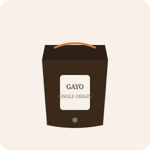
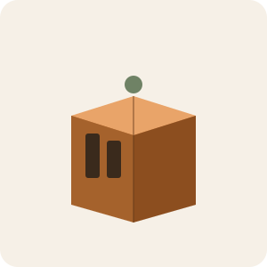

Gayo Single-Origin
Biji arabika dari dataran tinggi Gayo dengan catatan rasa cokelat gelap dan jeruk lembut. Sangrai medium.
Rp95.000 / 200gSmall-batch roastery, Bandung
Kami bekerja langsung dengan petani di Gayo, Toraja, dan Flores untuk membawa biji kopi terbaik ke meja Anda — disangrai dalam batch kecil agar rasa aslinya tetap terjaga.
Setiap batch disangrai sesuai pesanan, jadi biji kopi yang sampai ke Anda selalu dalam kondisi paling segar.

Biji arabika dari dataran tinggi Gayo dengan catatan rasa cokelat gelap dan jeruk lembut. Sangrai medium.
Rp95.000 / 200gDiseduh dingin selama 18 jam untuk rasa yang lembut, rendah asam, dan cocok diminum langsung dari kulkas.
Rp42.000 / 350ml
Tiga origin pilihan kurator kami dikirim setiap bulan, lengkap dengan catatan rasa dan rekomendasi seduh.
Rp250.000 / bulanRimba Roastery dimulai dari perjalanan kecil ke dataran tinggi Gayo pada tahun 2019. Kami melihat langsung betapa besar kerja para petani untuk menghasilkan biji kopi berkualitas — namun sebagian besar nilai jualnya justru dinikmati pihak lain di rantai distribusi.
Sejak itu, kami memilih untuk membeli langsung dari petani mitra dengan harga yang adil, lalu menyangrai sendiri dalam batch kecil di Bandung agar setiap karakter rasa daerah asalnya tetap terasa sampai ke cangkir Anda.
Sebagian cerita dari pelanggan yang berlangganan rutin setiap bulan.
“Rasa Gayo-nya jauh lebih kompleks dibanding kopi sangrai toko biasa. Sekarang saya selalu stok dua bungkus.”
“Paket langganannya membantu saya coba origin baru tiap bulan tanpa harus riset sendiri.”
“Cold brew Toraja jadi rutinitas pagi saya. Rasanya halus dan tidak terlalu asam.”
Kami buka setiap hari di gerai Bandung, atau kirim pesan untuk pemesanan grosir.